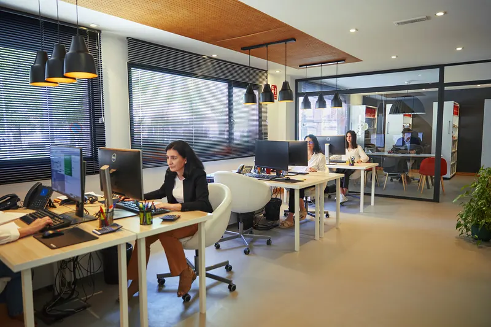
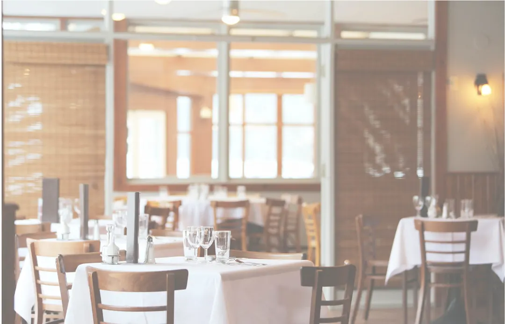
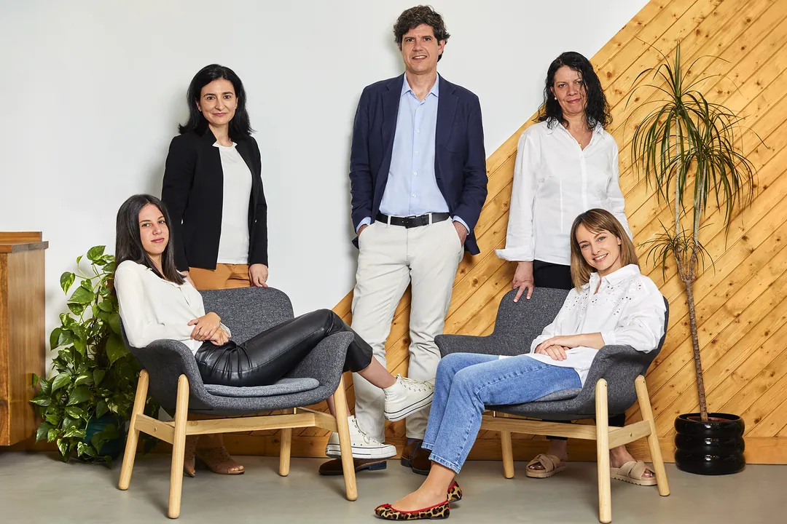
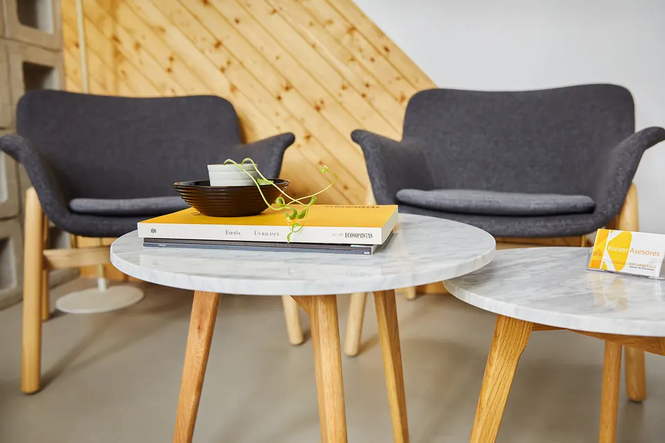

Para personas y relaciones laborales
Procesos de nóminas integrados en tu actividad, en tu organigrama empresarial, cubriendo todas tus necesidades.
- Alta de empleados
- Fichajes horarios y turnos
- Recibos de salarios
- Remesas bancarias
Generamos un impacto positivo en tu negocio. Asesoría y gestoría en Pinto.
Transparente al 100%
Nuestra labor es verificable en tiempo real.
Nos basamos en el dato
No nos quedamos en lo evidente: siempre inconformistas.
Integrados en tu organización
Te acompañamos, como si fuéramos parte de ti.
Sencillo para ti
Todo muy intuitivo y sencillo.
La manera de mantener la satisfacción plena de nuestros clientes es la de planificar toda una estrategia fundada en sus necesidades particulares. Cada negocio, cada empresa, cada cliente, para nosotros es único.

Procesos de nóminas integrados en tu actividad, en tu organigrama empresarial, cubriendo todas tus necesidades.
Dispondrás de tu información contable en tiempo real, de la manera más detallada, hasta el último dato.
Gestionamos las obligaciones fiscales y tributarias, responsabilizándonos de su presentación en tiempo y forma.
Analizamos las áreas de negocio de tu actividad, detectando las necesidades y problemas.
Desde un modelo colaborativo, para alcanzar la máxima especialización, el mayor acercamiento a la realidad de tu negocio.
Desarrollamos contigo proyectos de franquicias o te ayudamos a expandir la tuya.
Trabajamos contigo de la mano para franquiciar tu negocio o bien expandir una red de franquicias existentes. Tenemos los recursos necesarios para ayudarte a acelerar tu proyecto.

Tenemos amplia experiencia en franquiciar dentro del sector de restauración. Hemos trabajado con grandes marcas y ayudado a franquiciadores a iniciar el proyecto de franquicia e impulsarlo en fases posteriores.
Ponemos todo nuestro esfuerzo en ti, pues sabemos que las organizaciones empresariales son, lo que forman las personas que las componen.

Y, como esto tiene que ser de personas a personas, contamos con todo un equipo profesional, expertos en gestión empresarial, que buscamos la excelencia en nuestro trabajo.
ConócenosLa proactividad. Nos adelantamos a lo que viene, a lo que puede ocurrir.
Responsabilidad ética. Lo que no nos vale para nosotros, mucho menos nos vale para ti y para tu negocio.
Profesionalidad y calidad competencial. Profesionales en cada ámbito de nuestras actuaciones, al servicio de un asesoramiento eficaz.
No tenemos esa pregunta en la lista. Escríbenos y te respondemos.
Gestionamos al completo todo el proceso de relación con tus empleados, desde el momento del alta, firma digital de documentación laboral, fichajes horarios, establecimiento de turnos de trabajos, absentismos, recibos de salarios, pagos de remesas bancarias, intranet corporativa, App Portal del Empleado, LOPD, PRL etc. Todo de manera integrada.
Ver solucionesDispondrás de tu información contable en tiempo real, de la manera más detallada, hasta el último dato. Tendrás KPI´s modulables a tus necesidades. Todo desde tu dispositivo móvil, en cualquier momento y lugar.
Ver solucionesDesde un profundo análisis empresarial, así como un seguimiento de su evolución, gestionamos las obligaciones fiscales y tributarias, responsabilizándonos de su presentación en tiempo y forma, de la manera más eficiente para optimizar tu tributación.
Ver solucionesNuestra labor es verificable en tiempo real. Tendrás constancia en todo momento de todos y cada uno de los pasos que damos por ti. En tiempo real.
Ver tecnologíaEl tamaño de tu negocio no determina la importancia del mismo. Para nosotros todos los clientes son importantes porque tu empresa lo es para ti.
Ver modelosTe aportamos soluciones específicas que te ayuden a desarrollar tu idea de negocio. Cada talento requiere una respuesta, y vamos a dártela. Además de todo el asesoramiento legal, fiscal y tributario.
Ver modelosC/ Perales, 1 - Bajo. Pinto, 28320 (Madrid).
